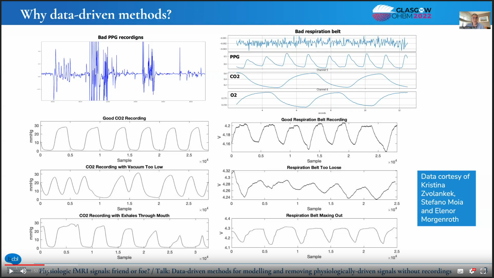
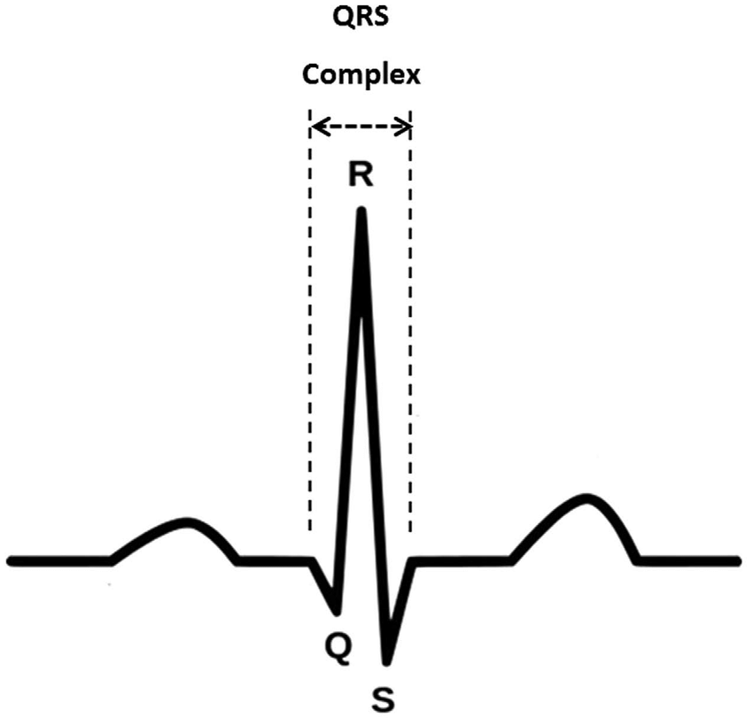

Running the scanning session
Familiarize with emergency procedures
You MUST know the security procedures in case of problem and keep yourself updated with changes. Some of the emergency procedures are found here.
In addition to the brief guidelines given in these SOPs, further safety information is found in ███.
Before initiating the session¶
Double check the protocol with the correct phase-encoding direction was selected
For conveniency, this is the session schedule (today is 2023-10-24 09:01):
| session | day | PE |
|---|---|---|
| 1 | 2023-10-20 | LR |
| 2 | 2023-10-20 | LR |
| 3 | 2023-10-21 | LR |
| 4 | 2023-10-21 | RL |
| 5 | 2023-10-22 | PA |
| 6 | 2023-10-22 | PA |
| 7 | 2023-10-23 | LR |
| 8 | 2023-10-23 | RL |
| 9 | 2023-10-24 | AP |
| 10 | 2023-10-24 | RL |
| 11 | 2023-10-25 | AP |
| 12 | 2023-10-25 | PA |
| 13 | 2023-10-26 | PA |
| 14 | 2023-10-26 | LR |
| 15 | 2023-10-27 | AP |
| 16 | 2023-10-27 | RL |
| 17 | 2023-10-28 | PA |
| 18 | 2023-10-28 | LR |
| 19 | 2023-10-29 | PA |
| 20 | 2023-10-29 | RL |
| 21 | 2023-10-30 | RL |
| 22 | 2023-10-30 | AP |
| 23 | 2023-10-31 | AP |
| 24 | 2023-10-31 | AP |
| 25 | 2023-11-01 | RL |
| 26 | 2023-11-01 | PA |
| 27 | 2023-11-02 | AP |
| 28 | 2023-11-02 | RL |
| 29 | 2023-11-03 | PA |
| 30 | 2023-11-03 | AP |
| 31 | 2023-11-04 | PA |
| 32 | 2023-11-04 | AP |
| 33 | 2023-11-05 | LR |
| 34 | 2023-11-05 | LR |
| 35 | 2023-11-06 | LR |
| 36 | 2023-11-06 | RL |
Report all observations in the session notes
It is easy to forget details about particular sessions, especially when so many sessions are acquired. They can however be very informative for quality control of your data or understand idiosyncrasies, so it is important to keep track of them. As such, please note any observation in the issue dedicated to collecting session notes that you should have opened in the preparation of the session.
During the session¶
- Check in with the participant frequently, not necessarily only at the scripted points.
- Watch for motion and arousal state using the ET's camera. If you detect motion or the participant falls asleep at inadequate points, use the speaker to inform them.
Check experimental setup¶
DO NOT FORGET to check the readiness of the experimental setup at this point
Check the syncbox¶
- the box is on,
- Synchronization mode is on,
- session has been started,
- volume count is reset to 0 out of 9999,
- USB cable to ███ is connected.
- Check the corresponding box in the issue collecting notes about the session.
Check the BIOPAC¶
- All cables are connected and not loose or hanging.
- The BIOPAC is turned on (switch it on if necessary).
- Check the corresponding box in the issue collecting notes about the session.
Check the GA¶
- the exhaust cap IS REMOVED
- the tubing coming from the scanning room is properly connected,
- the CO2 BNC output is plugged through the filter to the BIOPAC AMI200, on input channel 3,
- the GA is on (switch it on if necessary),
- ensure the PUMP IS ON, and
- turn the pump's power knob to MAXIMUM position.
- Check the corresponding box in the issue collecting notes about the session.
Check the eye-tracker¶
- The ET computer is turned on (switch it on if necessary),
- The pupil is correctly detected (as described here)
- Check the corresponding box in the issue collecting notes about the session.
Check ███:¶
- has enough battery, and plug the power cord if necessary;
- USB cable to the MMBT-S Trigger Interface Box is connected;
- serial cable from the MMBT-S Trigger Interface Box is connected to the back of the SPT100D digital interface (gray block) of the BIOPAC;
- computer is ready, with psychopy open, and with the appropriate version of experiments; and
- leave the computer with a pleasant screen projecting (e.g., a gray background).
- Check the corresponding box in the issue collecting notes about the session.
Check ███:¶
- has enough battery, and plug the power cord if necessary;
- computer is ready, with the AcqKnowledge software open and collecting data;
- check the ECG and RB signals, and fix unanticipated problems (e.g., the respiration belt needs to be fastened tighter);
- the Amphetamine app is running and keeping the computer unlocked while AcqKnowledge is working.
- Check the corresponding box in the issue collecting notes about the session.
When running multiple sessions back-to-back
- [ ] Restart a new session of the syncbox (within one session we usually see 9,000+, and the maximum is 9,999):
- [ ] Press the central button :fontawesome-solid-circle:{ .bluecolor } to stop the session,
- [ ] use the up :fontawesome-solid-caret-up:{ .bluecolor } and down :fontawesome-solid-caret-down:{ .bluecolor } arrows to find and select the option <span class="syncbox">Start Session</span> and hit enter :fontawesome-solid-circle:{ .bluecolor },
- [ ] Press the central button :fontawesome-solid-circle:{ .bluecolor } again to start the new session.
- [ ] In *AcqKnowledge*, make sure you stopped the previous recording and started a new one (it will ask for a re-calibration of the respiration belt).
- [ ] Start a *New examination* on the MR console:
- [ ] Make sure all acquisitions are done,
- [ ] close any open patient window,
- [ ] find the patient in the system (or write new information for a new participant)
- [ ] right click on the patient and press `start new examination`.
Ensuring the quality of physiological signals¶
It is critical to check that physiological signals are looking good:
- Before starting the session, and
- from time to time within the session.
|  |
|---|
| Examples of good and problematic RB and CO2 signals. Following these guidelines, our physiological signals should resemble the cases labeled as "good" above. |
Thanks to César Caballero-Gaudés, Stefano Moia, Kristina Zvolankek, Elenor Morgenroth for the slide above1.
Checking the RB¶
To ensure the best RB signal
Calibrate the RB with the tube unplugged while the participant is in the scanner (you may have to help the participant). Then, ask (and/or help) the participant to plug it back.
- The RB signal SHOULD NOT plateau (neither saturate at a peak value nor floor at the troughs). This means the RB is maxing out and it requires loosening.
- The envelope of your signal SHOULD remain approximately constant. If peaks drop or troughs rise, it might be a sign that the RB is too loose. Go back into the scanning room and tighten the RB.
- Check the corresponding box in the issue collecting notes about the session.
Checking the CO2 signal¶
-
The period of the CO2 signal should remain constant. If it varies, the vacuum MAY be too low:
- Check that the nasal cannula is correctly placed in the participant's nostrils.
- Check that all the extension connections of the tube are air-tight
- Check that the tube is not hanging at any point.
-
The envelope of your signal SHOULD remain approximately constant. If the peaks diminish, it might be a sign that the participant is breathing through their mouth. In such a case, remind the participant to breathe through their nose.
Remind the participant they MUST breathe through their nose at all times
Hey [NAME],
Is everything okay?
I needed to ask you whether you are breathing through your nose because we are not recording sensible levels of CO2.
[WAIT FOR THEIR RESPONSE]
Thank you.
-
Check the corresponding box in the issue collecting notes about the session.
Checking the ECG signal¶
- The period and the envelope of the signal should remain constant.
-
We are placing the ECG electrodes in lead-1 mode, which should give an ECG signal that looks vaguely like the familiar QRS shape (see below). Typically, the signal does not look as neat as on the schema because the magnetic fields of the MR interfere with the electrodes (even if they are MR-compatible electrodes).

-
Check the corresponding box in the issue collecting notes about the session.
Acquire a localizer (AAhead_scout)¶
-
Indicate the participant that the scanning will soon start:
Tell the participant that we are starting
Hey [NAME], we are about to start our first scan run.
This is going to be a long session, so please make sure you are feeling as comfortable as you possibly can in there. Remember not to cross your legs or hold your hands together and check your back is also comfortable. I'm going to ask you to take a deep breath now, so I can check the respiration belt is properly set up. If it is too tight, please let me know.
[Allow a few moments for the participant to breathe while you check the recordings]
Okay, we seem to be able to track your respiration. Is the respiration belt too restraining? This is also a good moment to swallow, and to check your neck and head are in a comfortable position.
For this first part, all you have to do is stay still; you can relax and close your eyes if it helps.
Are you ready?
-
Wait for the participant confirmation and set the speaker off afterward.
- Launch the
AAhead_scout_64ch-head-coilprotocol by pressing Continue . -
Once the localizer is concluded, you can drag and drop the image stack icon (something like 🗇, with an object on the top stack) onto the image viewer. That will open the localizer on the viewer.

-
In the issue collecting notes about the session, check the box confirming that the localizer has been acquired.
- If the quality looks good, check the box stating
Localizer looked ok. If not, follow the paragraph below.
- If the quality looks good, check the box stating
If the localizer presents very low quality¶
The localizer may present very low quality if the head-coil has not been properly initiated by the scanner
- In the issue collecting notes about the session, specifically under anat issues select the problem and describe it in detail in the anatomical scan notes section.
- Enter the scanning room, extract the participant from the scanner by pressing the home () button.
- Tell the participant that you need to reset the head coil
- Unplug and replug the head coil
- Check that the coil has been properly detected in the scanner's monitor
- Re-insert the participant in the scanner
- Re-run the
AAhead_scout_{32,64}ch-head-coilprotocol.
Acquire a high-resolution, anatomical image¶
-
Launch the
anat-T1w__mprageprotocol by pressing Continue .While you are still running the MPRAGE sequence
- Open the parameters of the sequence named
fmap-phasediff__greand ensure that under Contrast ⤷ Reconstruction the option Magnitude et phase is selected. This is crucial so that both the magnitude and the phase difference field map images are saved. - Repeat the configuration of Magnitude et phase for all sequences name
fmap-epi_acq-bold_dir-{RL,LR,PA,AP}__*. - Repeat the configuration of Magnitude et phase for all sequences name
func-bold_task-{bht,qct,rest}_dir-{RL,LR,PA,AP}__cmrr_me4_sms4. - Open the
dwi-dwi_dir-{RL,LR,PA,AP}__279dir_monopolarsequence and under the section Diff., uncheck all the derivatives except for Diff. Weighted Image.
- Open the parameters of the sequence named
-
In the issue collecting notes about the session, check the box confirming that the T1w image has been acquired.
- If the quality looks good, check the box stating
T1w looked okay. If not, please follow the instructions to repeat the scan and report the problem in the session notes.
- If the quality looks good, check the box stating
Acquire the diffusion MRI run¶
- Adjust the FoV of the
dwi-dwi_dir-{RL,LR,PA,AP}__279dir_monopolarsequence. - Verify again the
dwi-dwi_dir-{RL,LR,PA,AP}__279dir_monopolarparameters under section Diff. All the derivatives MUST be unchecked except for Diff. Weighted Image. -
Inform the participant that the diffusion scan will follow.
Only for the participant of Cohort I
Hey Oscar, we are ready to proceed with the diffusion scan. The BIOPAC is functional and AcqKnowledge is properly registering the respiration belt and ECG. The gas analyzer is ON, but it is still warming up. The psychopy computer is ready. Are you ready?
Participant of Cohort II
Hey [NAME], the next block is a bit long, around 30 minutes.
You can close your eyes and even sleep if you wish.
I'm going to give you a short time (ten seconds or so) to swallow, and perhaps accommodate your back or your arms. However, please try not to move your head.
It is critical that you don't move, especially at all at the very beginning and the next 20 seconds after you hear the first blipping sounds.
Try to minimize swallowing and eye movements (for example, blinking) and maintain comfortable and shallow breathing. Remember to breathe through your nose, not through your mouth, so the expired CO2 can be measured with the cannula.
Are you ready?
-
Launch the diffusion
dwi-dwi_dir-{RL,LR,PA,AP}__279dir_monopolarsequence by pressing Continue . - While it is running, adjust the FoV for the following sequence.
At this point, the GA should have finished the warm-up so you can verify it is working
- Ask the participant to take three deep breathes, to then go back to a comfortable, normal respiration pace. Check on the AcqKnoledge window that the three breathes are distinctly registered (taking into account that there may be 10-25 seconds of delay because of the tubing).
Once the main diffusion MRI run is done, proceed with fieldmaps¶
- In the corresponding issue for the collection of notes about the session, check the box confirming that the diffusion sequence has been acquired. Don't forget to report any observations there.
- Launch the DWI-EPI sequence
fmap-epi_acq-b0_dir-{RL,LR,PA,AP}__6dir_monopolarfor B0 field mapping by pressing Continue . - While it is running, adjust the FoV for the following sequence.
- Launch the GRE (phase difference) sequence
fmap-phasediff__grefor B0 field mapping by pressing Continue . - While it is running,
- Adjust the FoV for the following sequence.
- Verify that in the next sequence parameters under Contrast>Reconstruction the option Magnitude et phase is selected!
- Launch the BOLD-EPI sequence
fmap-epi_acq-bold_dir-{RL,LR,PA,AP}__cmrr_me4_sms4for B0 field mapping by pressing Continue . - While the fieldmap sequence is running,
- Adjust the FoV for the positive-control-task (
func-bold_task-qct_dir-{RL,LR,PA,AP}__cmrr_me4_sms4) fMRI sequence, and - verify the Number of measurements with respect to the task's timing (2min 38s).
- Verify that the positive-control task
task-qct_bold.psyexpis open in psychopy, that you calibrated the ET and that the physiological signals are still recording and look ok.
- Adjust the FoV for the positive-control-task (
- In the issue collecting notes about the session, check the boxes confirming that each fieldmap has been acquired and that you check that the physiological signal are still recording. Don't forget to report any observations there.
Acquire the functional MRI block¶
-
Inform the participant about the fMRI block
Starting the fMRI block - calibrating the eye tracker
Hey [NAME], we are now to move into measuring the activity of your brain.
Is everything alright thus far?
[Allow some time for response]
Before we start, we need to calibrate the eye-tracker device, which follows your right eye during experiments.
Your are going to see a round fixation point, and the point is going to move randomly over the screen space. Please follow it with your gaze, trying to look at it as stable as possible and without moving your head.
Are you ready?
-
Wait for confirmation, respond to follow-up comments, and initiate the ET calibration.
Quality-control task (QCT)¶
- Verify that the task's program is awaiting the scanner's trigger to start.
-
Inform the participant that we will proceed with the quality-control task (QCT). Repeat task instructions.
Starting the positive control task
Hey [NAME], thanks for your collaboration with the eye tracking calibration.
The following block will collect some behavioral data and requires your collaboration. You will be exposed to several activities.
Whenever you see a red circle, please fix your gaze on it, wherever it is shown on the screen. If the red circle moves, we ask you to follow it with your eyes.
Some other times, you'll see either "RIGHT" or "LEFT" written on the screen. During those times, please tap your thumb and the other fingers of your right or left hand as indicated on the screen.
Before we start, please leave the alarm button on your tummy to free your hand for finger tapping. Please do not hesitate to grab it in case you need to squeeze it.
-
Launch the
func-bold_task-qct_dir-{RL,LR,PA,AP}__cmrr_me4_sms4protocol by pressing Continue . - Wait for the calibration scans to be finished (the process is reported on the bottom left corner of the console) and verify that the first volume's trigger signal was received by ███ (meaning CHECK that the task program was initiated).
- While it is running:
- Adjust the FoV for the following sequence,
- verify the Number of measurements with respect to the task's timing (20min 6s), and
- double check that it has the setting Magnitude et phase selected in the drop-down menu under Contrast>Reconstruction.
- Once the sequence is over, close the current experiment on psychopy and open
task-rest_bold.psyexp. - In the corresponding issue for the collection of notes about the session, check the box confirming that the quality control task fMRI has been acquired and that you check that the physiological signals are still being recorded. Don't forget to report any observations there.
Resting state fMRI¶
-
Inform the participant:
Quick re-calibration the ET before continuing
Thanks [NAME], that was a short behavioral task.
Before moving on, we will run another calibration of the eye tracker, please follow the moving fixation point.
Is everything alright?
-
Wait for confirmation, respond to follow-up comments, and initiate the ET calibration
- Once the ET is calibrated, verify that the task is left and awaiting for the sequence's trigger to start.
-
Inform the participant that the next sequence is resting-state fMRI (rsfMRI).
Starting the resting-state block
Hey [NAME], we are about to start resting-state fMRI.
For this scan, all you have to do is stay still, and look at the movie. Please do not close your eyes, and it is particularly critical that you don't move at all in the initial moments of the acquisition block.
Are you ready?
-
Launch the rsfMRI sequence
func-bold_task-rest_dir-{RL,LR,PA,AP}__cmrr_me4_sms4by pressing Continue . - While it is running:
- Adjust the FoV for the following sequence,
- verify the Number of measurements with respect to the task's timing (5min 41s), and
- double check that it has the setting Magnitude et phase selected in the drop-down menu under Contrast>Reconstruction.
- Once the sequence is over, close the current experiment on psychopy and open
task-bht_bold.psyexp. - In the corresponding issue for the collection of notes about the session, check the box confirming that the quality control task fMRI has been acquired and that you check that the physiological signals are still being recorded. Don't forget to report any observations there.
Breath-holding task (BHT)¶
-
Inform the participant:
Quick re-calibration the ET before continuing
Thanks [NAME], that was a long behavioral block.
Before moving on, we will run another calibration of the eye tracker, please follow the moving fixation point.
Is everything alright?
-
Wait for confirmation, respond to follow-up comments, and initiate the ET calibration
- Once the ET is calibrated, verify that the task is left and awaiting for the sequence's trigger to start.
-
Inform the participant that the next sequence is breath-holding task fMRI. Repeat the instructions for the task.
Starting the breath-holding task
Hey [NAME], we will proceed now with a breath-holding task.
I remind you that you have to breathe following the cues of the colored rectangle.
Green means "BREATHE IN", orange means "BREATHE OUT" and red means "HOLD YOUR BREATH".
Remember to not follow the breathing instructions during the first block and to exhale the small amount of air you have remaining at the end of the hold.
Are you ready?
-
Launch the
func-bold_task-bht_dir-{RL,LR,PA,AP}__cmrr_me4_sms4sequence by pressing Continue . - While it is running, determine whether there is enough time to run the anatomical T2-weighted run. If so, adjust the FoV for the following sequence.
- When the breath-holding task is completed, check the box confirming that it has been acquired in the issue collecting notes about the session. Don't forget to report any observations there.
ONLY if time permits
- Launch the
anat-T2w__flairprotocol by pressing Continue
Concluding the session¶
-
Inform the participant:
Session is finished
Thanks [NAME], the session has concluded and we will shortly let you out of the scanner.
These operations may be done during the T2w acquisition
- Stop the AcqKnowledge recording on the ███ computer.
- Switch the BIOPAC MP160 module off.
- Turn off the pump of the GA.
- Switch the GA off.
- Put the exhaust and inlet caps back.
- The exam is over, you can proceed with the tear-down protocol.